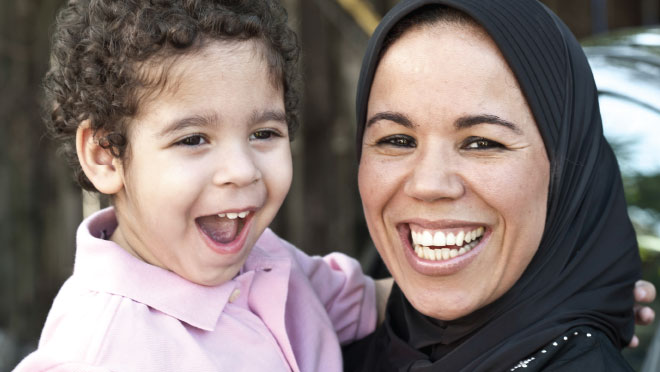

CEO Update
A message from Australian Red Cross Chief Executive Officer Robert Tickner.
Global trends for refugees 2012
Released on 19 June, the United Nations High Commissioner for Refugees (UNHCR) Global Trends report provides an overall snapshot of the state of forced displacement in 2012. A look at the countries that took in most of the world’s refugees puts Australia’s intake into a global perspective.
Teaching for the future
For Khalid and Hayfa, living in Iraq was not an option. Like many teachers in their homeland, they became the targets of kidnap, torture and death threats. They came to Australia in search of safety and have made it their new home, with the help of Red Cross.
Hope after heartache
Haider will never forget his first day in the Community Detention program that helped him find a safe home and meet new friends.

Mary meets Mohammed
In late March, Red Cross Migration Support program Tasmania was privileged to have the first showing of the new documentary, ‘Mary Meets Mohammed’ by local Tasmanian filmmaker Heather Kirkpatrick. The film follows the opening of Tasmania’s first detention centre through the eyes of local woman and knitting club member Mary and detained Afghan Hazara asylum seeker Mohammad, as they connect through the gift of a knitted beanie.
Riding high
In April, two young people from the Hill House in Rutherford, New South Wales, commenced volunteer work with Riding for the Disabled. The young people volunteer for a three hour shift once a fortnight. This has provided a great opportunity for these young people to gain skills while engaging with members of the community.
Fundamental Principles
As a member of the International Red Cross and Red Crescent Movement, and along with the millions of members, volunteers around the world, we live and breathe our 7 Fundamental Principles every day, in all that we do.
Let us know what you think
We welcome your comments and suggestions. Contact the editorial team at publications@redcross.org.au